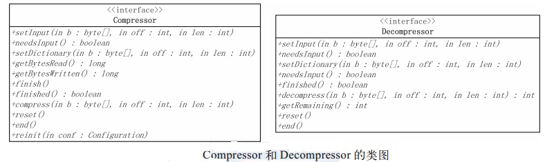
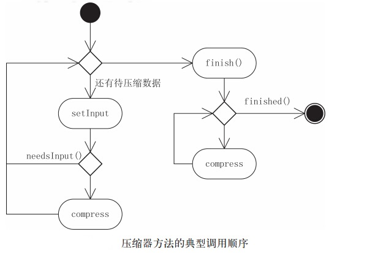

一般来说，计算机处理的数据都存在一些冗余度，同时数据中间，尤其是相邻数据间存在着相关性，所以可以通过一些有别于原始编码的特殊编码方式来保存数据，使数据占用的存储空间比较小，这个过程一般叫压缩。和压缩对应的概念是解压缩，就是将被压缩的数据从特殊编码方式还原为原始数据的过程。
压缩广泛应用于海量数据处理中，对数据文件进行压缩，可以有效减少存储文件所需的空间，并加快数据在网络上或者到磁盘上的传输速度。在Hadoop中，压缩应用于文件存储、Map阶段到Reduce阶段的数据交换（需要打开相关的选项）等情景。
数据压缩的方式非常多，不同特点的数据有不同的数据压缩方式：如对声音和图像等特殊数据的压缩，就可以采用有损的压缩方法，允许压缩过程中损失一定的信息，换取比较大的压缩比；而对音乐数据的压缩，由于数据有自己比较特殊的编码方式，因此也可以采用一些针对这些特殊编码的专用数据压缩算法。
Hadoop压缩简介
Hadoop作为一个较通用的海量数据处理平台，在使用压缩方式方面，主要考虑压缩速度和压缩文件的可分割性。
所有的压缩算法都会考虑时间和空间的权衡，更快的压缩和解压缩速度通常会耗费更多的空间（压缩比较低）。例如，通过gzip命令压缩数据时，用户可以设置不同的选项来选择速度优先或空间优先，选项–1表示优先考虑速度，选项–9表示空间最优，可以获得最大的压缩比。
需要注意的是，有些压缩算法的压缩和解压缩速度会有比较大的差别：gzip和zip是通用的压缩工具，在时间/空间处理上相对平衡，gzip2压缩比gzip和zip更有效，但速度较慢，而且bzip2的解压缩速度快于它的压缩速度。
当使用MapReduce处理压缩文件时，需要考虑压缩文件的可分割性。考虑我们需要对保持在HDFS上的一个大小为1GB的文本文件进行处理，当前HDFS的数据块大小为64MB的情况下，该文件被存储为16块，对应的MapReduce作业将会将该文件分为16个输入分片，提供给16个独立的Map任务进行处理。但如果该文件是一个gzip格式的压缩文件（大小不变），这时，MapReduce作业不能够将该文件分为16个分片，因为不可能从gzip数据流中的某个点开始，进行数据解压。但是，如果该文件是一个bzip2格式的压缩文件，那么，MapReduce作业可以通过bzip2格式压缩文件中的块，将输入划分为若干输入分片，并从块开始处开始解压缩数据。bzip2格式压缩文件中，块与块间提供了一个48位的同步标记，因此，bzip2支持数据分割。
可分割的意思就是: 如果一个文件大小为10g, 直接压缩后, 压缩包的大小为4g, 但这个压缩包是一个整体, 这个4g文件不能拆成几个小文件块(如4个1g 的文件块), 因为压缩描述信息一般会保存在压缩包的文件头, 如果将这个4g文件拆开, 那么没有压缩描述信息的文件块将无法解压缩, 不知道用的是哪种压缩算法。但如果把压缩描述信息放到拆开的每一个文件块中,那么这些文件块就变得都可以解压了, 而只将每个文件块的大小增大了一点。这就是可分割。
Hadoop支持的压缩格式：
| 压缩格式 | Unix工具 | 算法 | 文件扩展名 | 支持多文件 | 可分割 |
| DEFLATE | 无 | DEFLATE | .deflate | 否 | 否 |
| gzip | gzip | DEFLATE | .gz | 否 | 否 |
| zip | zip | DEFLATE | .zip | 是 | 是 |
| bzip | bzip2 | bzip2 | .bz2 | 否 | 是 |
| LZO | lzop | LZO | .lzo | 否 | 否 |
为了支持多种压缩解压缩算法，Hadoop引入了编码/解码器。与Hadoop序列化框架类似，编码/解码器也是使用抽象工厂的设计模式。目前，Hadoop支持的编码/解码器如下
压缩算法及其编码/解码器：
| 压缩格式 | 对应的编码/解码器 |
| DEFLATE | org.apache.hadoop.io.compress.DefaultCodec |
| gzip | org.apache.hadoop.io.compress.GzipCodec |
| bzip | org.apache.hadoop.io.compress.BZip2Codec |
| Snappy | org.apache.hadoop.io.compress.SnappyCodec |
同一个压缩方法对应的压缩、解压缩相关工具，都可以通过相应的编码/解码器获得。
Hadoop压缩API应用实例
下面将介绍使用编码/解码器的典型实例（代码在org.hadoopinternal.compress包中）。其中，compress()方法接受一个字符串参数，用于指定编码/解码器，并用对应的压缩算法对文本文件README.txt进行压缩。字符串参数使用Java的反射机制创建对应的编码/解码器对象，通过CompressionCodec对象，进一步使用它的createOutputStream()方法构造一个CompressionOutputStream流，未压缩的数据通过IOUtils.copyBytes()方法，从输入文件流中复制写入CompressionOutputStream流，最终以压缩格式写入底层的输出流中。
在本实例中，底层使用的是文件输出流FileOutputStream，它关联文件的文件名，是在原有文件名的基础上添加压缩算法相应的扩展名生成。该扩展名可以通过CompressionCodec对象的getDefaultExtension()方法获得。相关代码如下：
public static void compress(String method) throws…… {
File fileIn = new File("README.txt");
//输入流
InputStream in = new FileInputStream(fileIn);
Class<?> codecClass = Class.forName(method);
Configuration conf = new Configuration();
//通过名称找对应的编码/解码器
CompressionCodec codec = (CompressionCodec)
ReflectionUtils.newInstance(codecClass, conf);
File fileOut = new File("README.txt"+codec.getDefaultExtension());
fileOut.delete();
//文件输出流
OutputStream out = new FileOutputStream(fileOut);
//通过编码/解码器创建对应的输出流
CompressionOutputStream cout =
codec.createOutputStream(out);
//压缩
IOUtils.copyBytes(in, cout, 4096, false);
in.close();
cout.close();
}
需要解压缩文件时，通常通过其扩展名来推断它对应的编码/解码器，进而用相应的解码流对数据进行解码，如扩展名为gz的文件可以使用GzipCodec阅读。
CompressionCodecFactory提供了getCodec()方法，用于将文件扩展名映射到对应的编码/解码器，如下面的例子。有了CompressionCodec对象，就可以使用和压缩类似的过程，通过对象的createInputStream()方法获得CompressionInputStream对象，解码数据。相关代码如下：
public static void decompress(File file) throws IOException {
Configuration conf = new Configuration();
CompressionCodecFactory factory = new CompressionCodecFactory(conf);
//通过文件扩展名获得相应的编码/解码器
CompressionCodec codec = factory.getCodec(new Path(file.getName()));
if( codec == null ) {
System.out.println("Cannot find codec for file "+file);
return;
}
File fileOut = new File(file.getName()+".txt");
//通过编码/解码器创建对应的输入流
InputStream in = codec.createInputStream( new FileInputStream(file) );
……
}
Hadoop压缩框架
Hadoop通过以编码/解码器为基础的抽象工厂方法，提供了一个可扩展的框架，支持多种压缩方法。下面就来研究Hadoop压缩框架的实现。
1. 编码/解码器
前面已经提过，CompressionCodec接口实现了编码/解码器，使用的是抽象工厂的设计模式。CompressionCodec提供了一系列方法，用于创建特定压缩算法的相关设施，其类图如图所示：
CompressionCodec中的方法很对称，一个压缩功能总对应着一个解压缩功能。其中，与压缩有关的方法包括：
createOutputStream()用于通过底层输出流创建对应压缩算法的压缩流，重载的createOutputStream()方法可使用压缩器创建压缩流；
createCompressor()方法用于创建压缩算法对应的压缩器。后续会继续介绍压缩流CompressionOutputStream和压缩器Compressor。解压缩也有对应的方法和类。
CompressionCodec中还提供了获取对应文件扩展名的方法getDefaultExtension()，如对于org.apache.hadoop.io.compress.BZip2Codec，该方法返回字符串“.bz2”，注意字符串的第一个字符。相关代码如下：
public interface CompressionCodec {
//在底层输出流out的基础上创建对应压缩算法的压缩流CompressionOutputStream对象
CompressionOutputStream createOutputStream(OutputStream out)……
//使用压缩器compressor，在底层输出流out的基础上创建对应的压缩流
CompressionOutputStream createOutputStream(OutputStream out,
Compressor compressor) ……
……
//创建压缩算法对应的压缩器
Compressor createCompressor();
//在底层输入流in的基础上创建对应压缩算法的解压缩流CompressionInputStream对象
CompressionInputStream createInputStream(InputStream in) ……
……
//获得压缩算法对应的文件扩展名
String getDefaultExtension();
}
CompressionCodecFactory是Hadoop压缩框架中的另一个类，它应用了工厂方法，使用者可以通过它提供的方法获得CompressionCodec的不同实现类的对象(如CompressionCodec的实现类SnappyCodec的对象)。而CompressionCodec应用的是抽象工厂方法。,使用它可以不仅可以获得Compressor的不同实现类的对象(如Compressor的实现类SnappyCompressor的对象),也可以获得Decompressor的不同实现类的对象, 以及可以获得CompressionOutputStream或CompressionInputStream的不同实现类的对象。这也是工厂方法和抽象工厂方法的区别
注意：抽象工厂方法和工厂方法这两个设计模式有很大的区别，抽象工厂方法用于创建多种品类的多种产品的对象，如CompressionCodec可以获得和某一个压缩方法相关的压缩器对象, 还可以获得解压缩器对象(，这就是两种不同的品类, 同时CompressionCodec还可以获得压缩流和解压缩流的对象,这又是另外两种品类。而工厂方法（严格来说，CompressionCodecFactory是参数化工厂方法），用于创建一种品类的多种产品的对象，如通过CompressionCodecFactory的getCodec()方法，可以创建GzipCodec对象或BZip2Codec对象。
在前面的实例中已经使用过getCodec()方法，为某一个压缩文件寻找对应的CompressionCodec。为了分析该方法，需要了解CompressionCodec类中保存文件扩展名和CompressionCodec映射关系的成员变量codecs。
codecs是一个有序映射表，即它本身是一个Map，同时它对Map的键排序，下面是codecs中保存的一个可能的映射关系：
{
2zb.: org.apache.hadoop.io.compress.BZip2Codec,
etalfed.: org.apache.hadoop.io.compress.DeflateCodec,
yppans.: org.apache.hadoop.io.compress.SnappyCodec,
zg.: org.apache.hadoop.io.compress.GzipCodec
}
可以看到，Map中的键是排序的。
getCodec()方法的输入是Path对象，保存着文件路径，如实例中的“README.txt.bz2”。
首先通过获取Path对象对应的文件名并逆转该字符串得到“2zb.txt.EMDAER”，然后通过有序映射SortedMap的headMap()方法，查找最接近上述逆转字符串的有序映射的部分视图，如输入“2zb.txt.EMDAER”的查找结果subMap，只包含“2zb.”对应的那个键–值对，如果输入是“zg.txt.EMDAER”，则subMap会包含成员变量codecs中保存的所有键–值对。然后，简单地获取subMap最后一个元素的键，如果该键是逆转文件名的前缀，那么就找到了文件对应的编码/解码器，否则返回空。实现代码如下：
public class CompressionCodecFactory {
……
//该有序映射保存了逆转文件后缀（包括后缀前的“.”）到CompressionCodec的映射
//通过逆转文件后缀，我们可以找到最长匹配后缀
private SortedMap<String, CompressionCodec> codecs = null;
……
public CompressionCodec getCodec(Path file) {
CompressionCodec result = null;
if (codecs != null) {
String filefilename = file.getName();
//逆转字符串
String reversedFilename = new
StringBuffer(filename).reverse().toString();
SortedMap<String, CompressionCodec> subMap =
codecs.headMap(reversedFilename);
if (!subMap.isEmpty()) {
String potentialSuffix = subMap.lastKey();
if (reversedFilename.startsWith(potentialSuffix)) {
result = codecs.get(potentialSuffix);
}
}
}
return result;
}
}
CompressionCodecFactory.getCodec()方法的代码看似复杂，但通过灵活使用有序映射SortedMap，实现其实还是非常简单的。
2. 压缩器和解压器
压缩器（Compressor）和解压器（Decompressor）是Hadoop压缩框架中的一对重要概念。
Compressor可以插入压缩输出流的实现中，提供具体的压缩功能；相反，Decompressor提供具体的解压功能并插入CompressionInputStream中。Compressor和Decompressor的这种设计，最初是在Java的zlib压缩程序库中引入的，对应的实现分别是java.util.zip.Deflater和java.util.zip.Inflater。下面以Compressor为例介绍这对组件。
Compressor的用法相对复杂，Compressor通过setInput()方法接收数据到内部缓冲区，自然可以多次调用setInput()方法，但内部缓冲区总是会被写满。如何判断压缩器内部缓冲区是否已满呢？可以通过needsInput()的返回值，如果是false，表明缓冲区已经满，这时必须通过compress()方法获取压缩后的数据，释放缓冲区空间。
为了提高压缩效率，并不是每次用户调用setInput()方法，压缩器就会立即工作，所以，为了通知压缩器所有数据已经写入，必须使用finish()方法。finish()调用结束后，压缩器缓冲区中保持的已经压缩的数据，可以继续通过compress()方法获得。至于要判断压缩器中是否还有未读取的压缩数据，则需要利用finished()方法来判断。
注意：finished()和finish()的作用不同，finish()结束数据输入的过程，而finished()返回false，表明压缩器中还有未读取的压缩数据，可以继续通过compress()方法读取。
Compressor接口源代码如下：
public interface Compressor {
/**
* 输入要压缩的数据.
* 根据#needsInput() 返回的值，判断是否执行
* 如果返回为true，表示需要更多的数据.
*
* @param b 输入数据
* @param off 偏移的起始位置
* @param len 长度
*/
public void setInput(byte[] b, int off, int len);
/**
* 当输入数据缓存为空的时候返回 true，并且
* #setInput() 应该被调用用来提供输入数据.
*/
public boolean needsInput();
/**
* 设置当前路径为压缩.
*
* @param b Dictionary data bytes
* @param off Start offset
* @param len Length
*/
public void setDictionary(byte[] b, int off, int len);
/**
* 返回输入的还未被压缩的字节数.
*/
public long getBytesRead();
/**
* 返回输出的已经被压缩的字节数.
*/
public long getBytesWritten();
/**
* 当调用的时候，表示当前输入缓存的内容的压缩操作应该结束
*/
public void finish();
/**
* 当压缩器中的最末端的输出数据到达则返回true.
*/
public boolean finished();
/**
* 向缓存中填充压缩的数据. 返回实际的压缩的字节数. 返回0表明 needsInput()被调用
* 来判断是否需要更多的输入数据.
*
* @param b Buffer for the compressed data
* @param off Start offset of the data
* @param len Size of the buffer
* @return The actual number of bytes of compressed data.
*/
public int compress(byte[] b, int off, int len) throws IOException;
/**
* 重置 compressor， 预备一些新的输入数据.
*/
public void reset();
/**
* 关闭 compressor并丢弃为处理的输入.
*/
public void end();
}
使用Compressor的一个典型实例如下：
public static void compressor() throws ClassNotFoundException, IOException
{
//读入被压缩的内容
File fileIn = new File("README.txt");
InputStream in = new FileInputStream(fileIn);
int datalength=in.available();
byte[] inbuf = new byte[datalength];
in.read(inbuf, 0, datalength);
in.close();
//长度受限制的输出缓冲区，用于说明finished()方法
byte[] outbuf = new byte[compressorOutputBufferSize];
Compressor compressor=new BuiltInZlibDeflater();//构造压缩器
int step=100;//一些计数器
int inputPos=0;
int putcount=0;
int getcount=0;
int compressedlen=0;
while(inputPos < datalength) {
//进行多次setInput()
int len=(datalength-inputPos>=step)? step:datalength-inputPos;
compressor.setInput(inbuf, inputPos, len );
putcount++;
while (!compressor.needsInput()) {
compressedlen=compressor.compress(outbuf, 0, ……);
if(compressedlen>0) {
getcount++; //能读到数据
}
} // end of while (!compressor.needsInput())
inputPos+=step;
}
compressor.finish();
while(!compressor.finished()) { //压缩器中有数据
getcount++;
compressor.compress(outbuf, 0, compressorOutputBufferSize);
}
System.out.println("Compress "+compressor.getBytesRead() //输出信息
+" bytes into "+compressor.getBytesWritten());
System.out.println("put "+putcount+" times and get "+getcount+" times");
compressor.end();//停止
}
以上代码实现了setInput()、needsInput()、finish()、compress()和finished()的配合过程。将输入inbuf分成几个部分，通过setInput()方法送入压缩器，而在finish()调用结束后，通过finished()循序判断压缩器是否还有未读取的数据，并使用compress()方法获取数据。
在压缩的过程中，Compressor可以通过getBytesRead()和getBytesWritten()方法获得Compressor输入未压缩字节的总数和输出压缩字节的总数，如实例中最后一行的输出语句。Compressor和Decompressor的类图如图所示。

Compressor.end()方法用于关闭解压缩器并放弃所有未处理的输入；reset()方法用于重置压缩器，以处理新的输入数据集合；reinit()方法更进一步允许使用Hadoop的配置系统，重置并重新配置压缩器。
3. 压缩流和解压缩流
Java最初版本的输入/输出系统是基于流的，流抽象了任何有能力产出数据的数据源，或者是有能力接收数据的接收端。一般来说，通过设计模式装饰，可以为流添加一些额外的功能，如前面提及的序列化流ObjectInputStream和ObjectOutputStream。
压缩流（CompressionOutputStream）和解压缩流（CompressionInputStream）是Hadoop压缩框架中的另一对重要概念，它提供了基于流的压缩解压缩能力。如图3-7所示是从java.io.InputStream和java.io.OutputStream开始的类图。
这里只分析和压缩相关的代码，即CompressionOutputStream及其子类。
OutputStream是一个抽象类，提供了进行流输出的基本方法，它包含三个write成员函数，分别用于往流中写入一个字节、一个字节数组或一个字节数组的一部分（需要提供起始偏移量和长度）。
注意：流实现中一般需要支持的close()和flush()方法，是java.io包中的相应接口的成员函数，不是OutputStream的成员函数。
CompressionOutputStream继承自OutputStream，也是个抽象类。如前面提到的ObjectOutputStream、CompressionOutputStream为其他流添加了附加额外的压缩功能，其他流保存在类的成员变量out中，并在构造的时候被赋值。
CompressionOutputStream实现了OutputStream的close()方法和flush()方法，但用于输出数据的write()方法、用于结束压缩过程并将输入写到底层流的finish()方法和重置压缩状态的resetState()方法还是抽象方法，需要CompressionOutputStream的子类实现。相关代码如下：
public abstract class CompressionOutputStream extends OutputStream {
//输出压缩结果的流
protected final OutputStream out;
//构造函数
protected CompressionOutputStream(OutputStream out) {
this.out = out;
}
public void close() throws IOException {
finish();
out.close();
}
public void flush() throws IOException {
out.flush();
}
public abstract void write(byte[] b, int off, int len) throws IOException;
public abstract void finish() throws IOException;
public abstract void resetState() throws IOException;
}
CompressionOutputStream规定了压缩流的对外接口，如果已经有了一个压缩器的实现，能否提供一个通用的、使用压缩器的压缩流实现呢？答案是肯定的，CompressorStream使用压缩器实现了一个通用的压缩流，其主要代码如下：
public class CompressorStream extends CompressionOutputStream {
protected Compressor compressor;
protected byte[] buffer;
protected boolean closed = false;
//构造函数
public CompressorStream(OutputStream out,
Compressor compressor, int bufferSize) {
super(out);
……//参数检查，略
this.compressor = compressor;
buffer = new byte[bufferSize];
}
……
public void write(byte[] b, int off, int len) throws IOException {
//参数检查，略
……
compressor.setInput(b, off, len);
while (!compressor.needsInput()) {
compress();
}
}
protected void compress() throws IOException {
int len = compressor.compress(buffer, 0, buffer.length);
if (len > 0) {
out.write(buffer, 0, len);
}
}
//结束输入
public void finish() throws IOException {
if (!compressor.finished()) {
compressor.finish();
while (!compressor.finished()) {
compress();
}
}
}
……
//关闭流
public void close() throws IOException {
if (!closed) {
finish();//结束压缩
out.close();//关闭底层流
closed = true;
}
}
……
}
CompressorStream提供了几个不同的构造函数，用于初始化相关的成员变量。上述代码片段中保留了参数最多的构造函数，其中，CompressorStream需要的底层输出流out和压缩时使用的压缩器，都作为参数传入构造函数。另一个参数是CompressorStream工作时使用的缓冲区buffer的大小，构造时会利用这个参数分配该缓冲区。
CompressorStream.write()方法用于将待压缩的数据写入压缩器中。待压缩的数据在进行一番检查后，最终调用压缩器的setInput()方法进入压缩器。setInput()方法调用结束后，通过Compressor.needsInput()判断是否需要调用compress()方法，获取压缩后的输出数据。上一节已经讨论了这个问题，如果内部缓冲区已满，则需要通过compress()方法提取数据，提取后的数据直接通过底层流的write()方法输出。
当finish()被调用（往往是CompressorStream被关闭），这时CompressorStream流调用压缩器的finish()方法通知输入已经结束，然后进入另一个循环，该循环不断读取压缩器中未读取的数据，然后输出到底层流out中。
CompressorStream中的其他方法，如resetState()和close()都比较简单，不再一一介绍了。
CompressorStream利用压缩器Compressor实现了一个通用的压缩流，在Hadoop中引入一个新的压缩算法，如果没有特殊的考虑，一般只需要实现相关的压缩器和解压器，然后通过CompressorStream和DecompressorStream，就实现相关压缩算法的输入/输出流了。
CompressorStream的实现并不复杂，只需要注意压缩器几个方法间的配合，下图给出了这些方法的一个典型调用顺序：

4. Java本地方法
数据压缩往往是计算密集型的操作，考虑到性能，建议使用本地库（Native Library）来压缩和解压。在某个测试中，与Java实现的内置gzip压缩相比，使用本地gzip压缩库可以将解压时间减少50%，而压缩时间大概减少10%。
Hadoop的DEFLATE、gzip和Snappy都支持算法的本地实现，其中Apache发行版中还包含了DEFLATE和gzip的32位和64位Linux本地压缩库（Cloudera发行版还包括Snappy压缩方法）。默认情况下，Hadoop会在它运行的平台上查找本地库。
假设有一个C 函数，它实现了某些功能，同时因为某种原因（如效率），使得用户不希望用Java语言重新实现该功能，那么Java本地方法（Native Method）就是一个不错的选择。Java提供了一些钩子函数，使得调用本地方法成为可能，同时，JDK也提供了一些工具，协助用户减轻编程负担。
Java语言中的关键字native用于表示某个方法为本地方法，显然，本地方法是类的成员方法。下面是一个本地方法的例子，代码片段来自Cloudera的Snappy压缩实现，在org.apache.hadoop.io.compress.snappy包中。其中，静态方法initIDs()和方法compressBytesDirect()用关键字native修饰，表明这是一个Java本地方法。相关代码如下：
public class SnappyCompressor implements Compressor {
……
private native static void initIDs();
private native int compressBytesDirect();
}